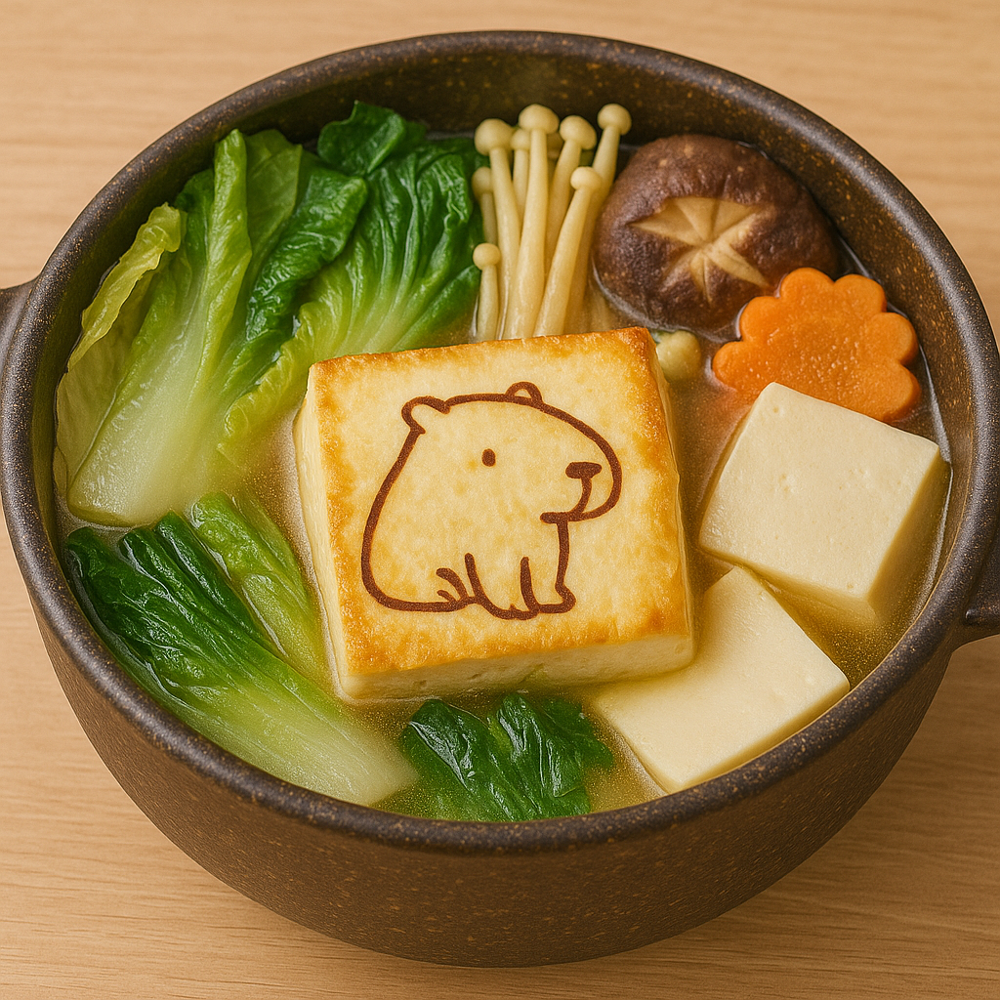

MENU
首頁
餐點一覽
活動消息
訂位資訊
營業資訊
餐點一覽
每一道 都像水豚慢慢挑過的午後味道
主食
飲品
甜點
其他
水豚森林燉飯
奶油白醬與綜合野菇燉煮成柔和的午後味道
焗烤番茄筆管麵
經典茄汁筆管麵鋪上雙色起司，烤得剛剛好牽絲的程度
太陽煎蛋咖哩飯
自製日式咖哩搭配太陽煎蛋和鬆軟白飯，一口就暖起來

野菜豆腐小鍋
溫溫的小鍋湯，裝著豆腐、蔬菜與好好休息的一餐
香草奶油烤雞飯
香煎雞腿排佐香草奶油醬，配上蔬菜與米飯，水豚也會點頭
水豚午睡飯糰組
兩顆手作飯糰搭配小菜與味噌湯，像水豚午後的小滿足
水豚拿鐵
溫潤濃郁的義式濃縮搭配滑順鮮奶，像水豚的午後一樣悠閒。
咕溜布丁奶茶
布丁滑順與紅茶奶香完美融合，每一口都是甜甜的療癒。
曬太陽檸檬氣泡
新鮮檸檬加上氣泡水，清爽沁涼，像在草地上曬太陽的小水豚。
草原抹茶歐蕾
選用日式抹茶與鮮奶調和，微苦回甘，像午後草原上的微風。
咕噥可可歐蕾
濃厚可可香氣融合牛奶，溫暖醇香，適合靜靜發呆的午後。
鳴鳴鳴莓果茶
草莓、藍莓與紅茶交織的果香協奏，酸甜平衡，一喝就微笑。
月光蜂蜜柚子茶
韓式柚子與蜂蜜結合，溫潤果香中帶點微酸，像月光下的安靜時光。
躺平椰椰拿鐵
椰奶與咖啡融合的南國風味，清爽不膩，專為想放空的你設計。
水豚布丁瓶
綿密滑順的手工布丁，帶著焦糖的微苦香氣，一入口就融化的療癒感。
草地抹茶卷
抹茶蛋糕捲中夾入香甜奶霜與紅豆餡，彷彿在草地上翻滾的小確幸。
日光柚香塔
酸甜柚子醬搭配酥脆塔皮，口感清新爽口，就像午后陽光灑落的味道。
咕噥巧克力熔岩
溫熱濃郁的巧克力蛋糕，一刀切下流出熱情醬汁，適合想被幸福包圍的你。
水豚日常咖啡豆
選用中南美洲精品豆，風味溫潤、帶有堅果與焦糖香，適合每日早晨的一杯平靜。
草地香氛蠟燭
以青草與陽光白茶調為主，點燃即帶來戶外午睡般的舒適感，療癒你的每一刻。
咕噥飲品杯套組
附吸管與環保杯套，圖案為限定水豚插圖，讓你外帶飲品也能感受水豚陪伴。